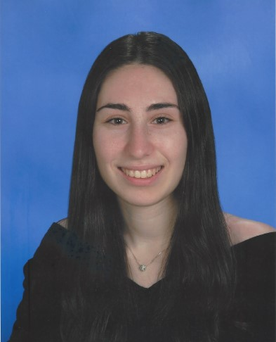

Faculty

|
Shirley Dyke
Professor of Mechanical Engineering and Civil Engineering
Doctor of Philosophy in Civil Engineering, University of Notre Dame, Notre Dame, IN
Bachelor of Science in Aeronautical and Astronautical Engineering, University of Illinois, Champaign-Urbana, Illinois
|
Post Doctoral Researchers
 |
Xiaoyu Liu
Modeling, Model Updating
Master of Science in Mechanical Engineering, Purdue Universirty, West Lafayette, IN
Bachelor of Science in Civil Engineering, Xi'an Jiaotong University, Xi'an, Shaanxi, China
|
Graduate Students
 |
Herta Montoya
Cyber-Physical Systems, Real Time Hybrid Simulation, Infrastructure Resilience
Bachelor of Science in Civil Engineering, The University of Texas at San Antonio, San Antonio, TX
|
|
Xin Zhang
Computer Vision, Machine Learning, Deep Learning, Structural Health Monitoring
Master of Science in Civil Engineering, Northwestern University, Evanston, IL
Bachelor of Science in Civil Engineering, Tongji University, Shanghai, China
|
 |
Manuel Iván Salmerón Becerra
Cyber-Physical Systems, Real-Time Hybrid Simulation, Damage and Degradation Modeling and Testing
Masters of Science in Structural Engineering, Universidad Nacional Autónoma de México, Coyoacán, México
Bachelor of Science in Civil Engineering, Universidad Nacional Autónoma de México, Ciudad de México, México
|
|
Lissette Janet Iturburu Altamirano
Computer vision, Structural and Earthquake Engineering
Master of Science in Structural and Earthquake engineering at University at Buffalo, Buffalo, NY
Bachelor of Science at Escuela Superior Politécnica del Litoral, Ecuador
|
|
Edwin Dielmig Patiño
Real Time Hybrid Simulation, Seismic Isolation, Structural Health Monitoring
Bachelor of Science in Civil Engineering, Universidad Tecnológica de Panamá, David, Panamá
|
 |
Luca Vaccino
System of Systems, System Integration
Master of Science in Mechatronic Engineering, Politecnico di Torino, Italy
Bachelor of Science in Mechanical Engineering, Politecnico di Torino, Italy
|
|
Motahareh Mirfarah
Bayesian Inference, Uncertainty Quantification, Structural Health Monitoring, Cyber-Physical Systems
Master of Science in Mechanical Engineering, Sharif University of Technology, Tehran, Iran
Bachelor of Science in Mechanical Engineering, University of Tehran, Tehran, Iran
|
 |
Oscar Forero
Structural control, Structural and Earthquake Engineering
Master of Science in Civil Engineering, Pontificia Universidad Javeriana, Cali, Colombia
Bachelor of Science in Civil Engineering, Pontificia Universidad Javeriana, Cali, Colombia
|
 |
Talha Faiz Mohammed
Structural Engineering, Robust Design Optimization, and Physics-based Modeling
Bachelor of Technology in Civil Engineering, National Institute of Technology, Warangal, India
|
 |
Christina McNichol
Structural Health Monitoring, Uncertainly Quantification
Bachelor of Science in Civil Engineering, Purdue University, West Lafayette, IN
|
 |
Mohamed Gomaa
Real Time Hybrid Simulation, Control Systems
Bachelor of Science in Civil Engineering, Cairo University, Egypt
Master of Science in Civil Engineering, University at Buffalo, Buffalo, NY
|
 |
Lalit Dongare
Cyber-Physical Systems, Real Time Hybrid Simulation
Bachelor of Technology in Civil Engineering, Vellore Institute of Technology, Vellore, India
Master of Technology in Civil Engineering (Specialization in Structural Engineering), Veermata Jijabai Technological Institute, Maharashtra, India
|
Visiting Scholars